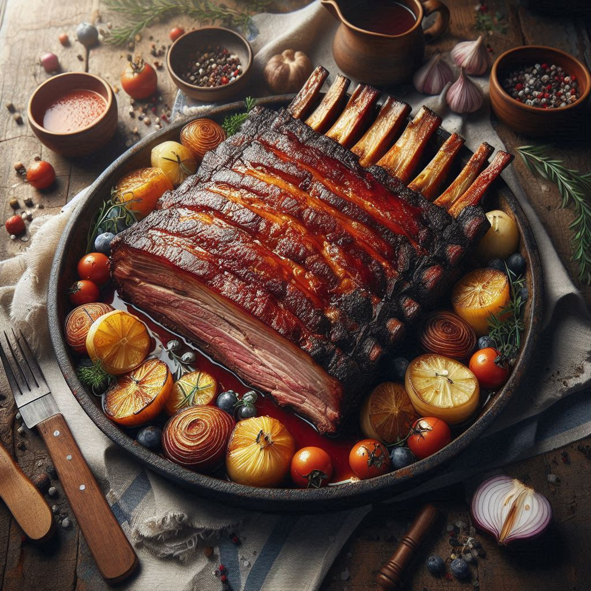

Norwegian Ribbe

Description
Ribbe is a traditional Norwegian dish of roasted pork belly, known for its crispy crackling skin and tender,
juicy meat. It is typically served during the Christmas season with sides like potatoes, sauerkraut, and gravy.
Ingredients
- 2-3kg pork belly with skin
- 3 tsp salt
- 2 tsp black pepper
- 2 cups water
Steps
- Score the skin of the pork belly in a crisscross pattern. Rub salt and pepper into the skin and meat, and let it rest in the refrigerator for at least 24 hours.
- Preheat the oven to 450°F (230°C). Place the pork belly on a roasting rack over a baking dish with water. Roast for 30 minutes until the skin starts to bubble and crisp.
- Reduce the oven temperature to 350°F (180°C) and continue roasting for 1.5-2 hours, until the meat is tender and the skin is crispy.
- Let the ribbe rest for 15 minutes, then slice and serve with traditional sides like potatoes, sauerkraut, and gravy.